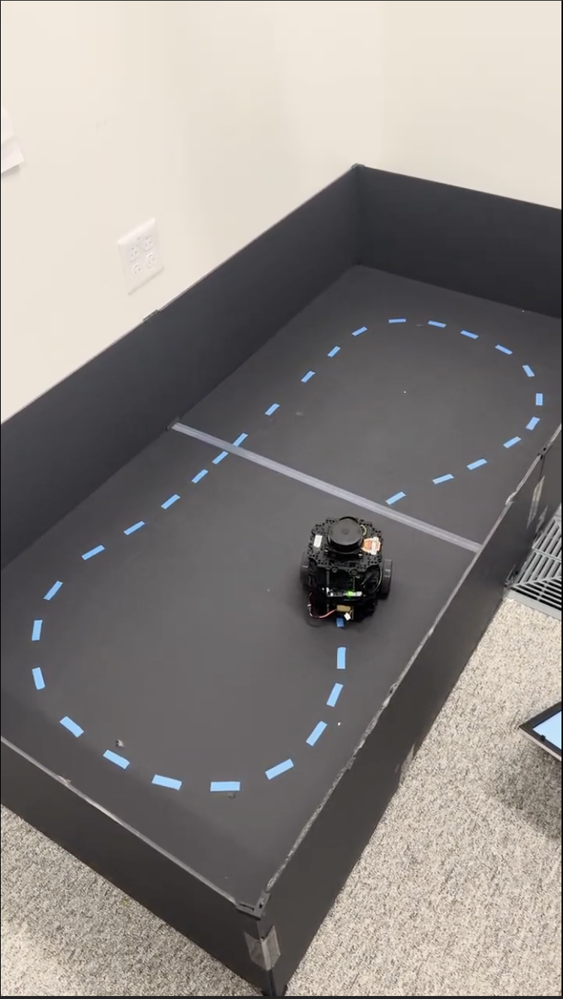

Projects

Fully Autonomous TurtleBot3
Built a complete ROS2 autonomy stack including odometry, occupancy grid mapping, particle filter localization, ICP scan matching, and real-time planning.
Distributed UWB Localization System
Modernized a distributed network localization system at MIT Lincoln Laboratory, implementing a probabilistic trust filter to improve robustness under degraded sensing conditions.

CornholeBot Mechatronic Launch System
Designed and built a four-bar intake and flywheel launching system capable of accurately firing 15 beanbags in under 240 seconds.